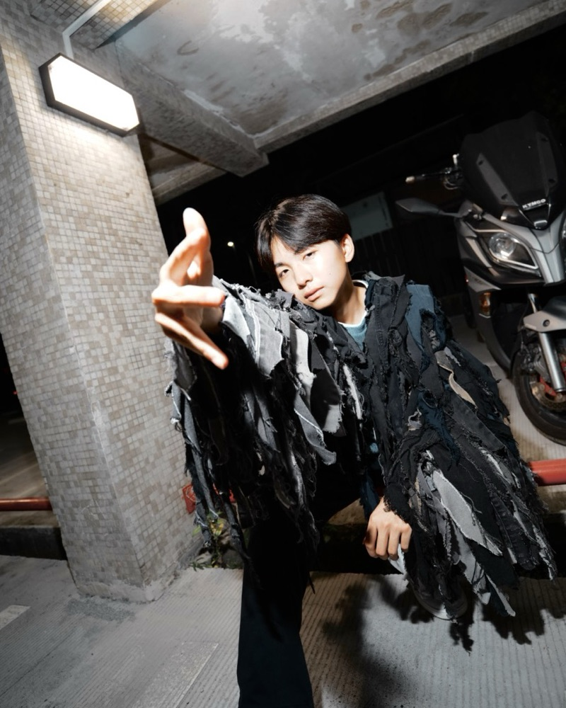
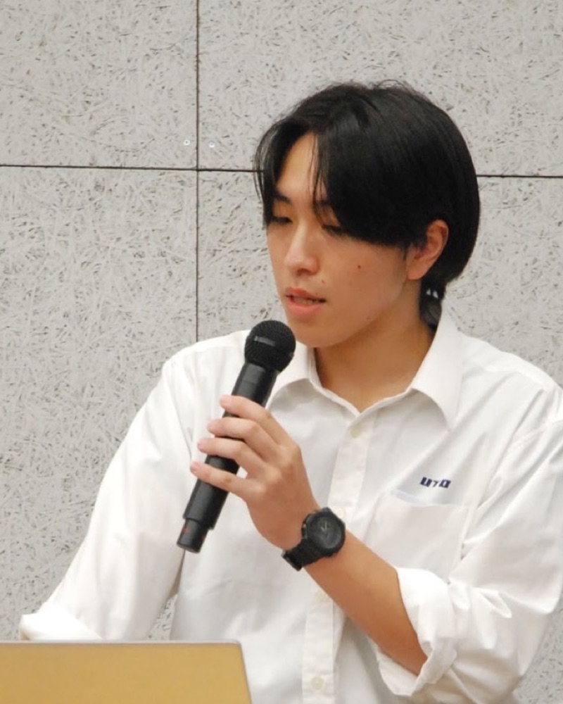
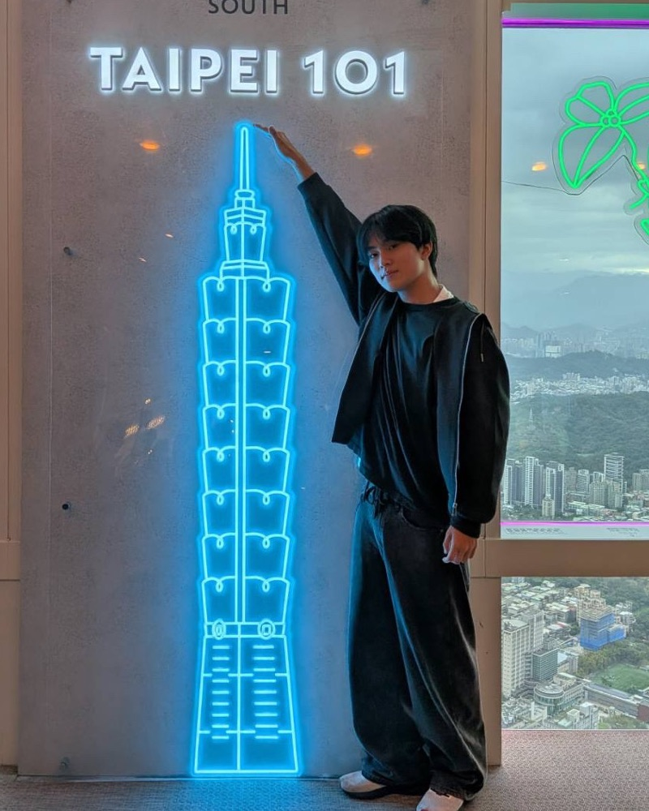

ブロックを並べる
画面を開く前に、まず手を動かします。ブロックを並べることが、そのままプログラムになります。
つかプロとは
Scratchなど画面の上で学び始めた子の中には、「何をしているか分からないまま終わってしまった」という経験から、プログラミングを苦手に感じてしまう子がいます。つかプロは、その前に手で触れる入口をつくります。
しくみ
コードの書き方を教える前に、「やってみたい！」と思える感動と自信を。つかプロは、プログラミング教育の入口になる教材です。
画面を開く前に、まず手を動かします。ブロックを並べることが、そのままプログラムになります。
自分が並べた通りに、ロボットが動きます。「なぜ動くのか」が目で見て、手で触れて分かります。
最初の「できた！」を体験したら、ScratchやPythonも楽しく学べる。先生も子どもたちも、一緒に。
つかプロは、手の中から始まる。
ロボット
なぜ、つくるのか
今の小学校のプログラミング教育には、苦手意識の定着、先生の負担の増加、ICT環境や教材の格差といった課題があります。
私たちも最初から得意だったわけではありません。画面の中でブロックを並べても、「なぜこれで動くのか」が分からなかった。でも、自分で組み立てたロボットが思った通りに動いたとき、プログラミングが面白くなりました。高校生だからこそ、子どもたちに近い目線で入口をつくれると考えています。
開発のようす
実績
WRO（World Robot Olympiad）
0年間
2024年から2026年にかけて、全国大会に出場しました。
国際大会
PHILIPPINES
WRO OPEN CHAMPIONSHIP APAC PHILIPPINES に出場しました。
熊本デジタル作品コンテスト
総合
準グランプリ
「ユニガチャ」で受賞。
創造アイデアロボットコンテスト
全国大会
出場
アイデアを形にしたロボットで。
ユニガチャ
デジタル × アナログ
中学生の頃からロボット製作に取り組み、デジタルとアナログの融合をテーマに進めてきたプロジェクトです。
そして、つかプロ
IPPO 採択
熊本版未踏的プロジェクト IPPO に採択。子どもたちの「できた！」をつくります。
チーム

Member
熊本県立宇土高等学校 1年
IPPO 採択プロジェクト「つかプロ」の開発メンバー

Member
熊本県立宇土高等学校 1年
IPPO 採択プロジェクト「つかプロ」の開発メンバー

Member
熊本県立宇土高等学校 1年
IPPO 採択プロジェクト「つかプロ」の開発メンバー
担当プロジェクトマネージャー：杉本 達應